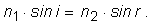
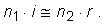

Divergenţa unui fascicul de lumină este exprimată cantitativ prin măsura semiunghiului conului de lumină (figura 1).
Fig. 1.
 Divergenţa unui fascicul de lumină.
Divergenţa unui fascicul de lumină.Imaginează o metodă şi măsoară cât este divergenţa fasciculului de lumină al:
a. unei lanterne;
b. unui indicator laser.
Desenează pe hârtie un arc de curbă. Aşază pe desen o mică oglindă plană, astfel încât imaginea în oglindă a curbei să fie în continuarea porţiunii de curbă vizibilă pe hârtie (figura 2).
Fig. 2. Aşezarea oglinzii.
În această situaţie, oglinda este perpendiculară pe curbă în acel loc şi poţi folosi oglinda pentru a trasa normala la curbă în acel loc!
Exersează şi cu alte arce de curbă.
Încearcă şi cu un arc de cerc. Verifică dacă într−adevăr normala trasată astfel trece prin centrul cercului (aşa cum ar trebui!).
Un fascicul paralel de lumină este incident pe o suprafaţă cu neregularităţi (figura 3).
Fig. 3. Incidenţă pe o suprafaţă cu neregularităţi.
Descrie ce se întâmplă cu lumina cae se reflectă pe o astfel de suprafaţă.
Trimite lumina indicatorului laser către tavan, aproape de muchia cu un perete.
Observă pata de lumină reflectată de pe tavan pe perete.
Este tot atât de netă ca cea de pe tavan sau este mai difuză?
Poţi folosi această observaţie pentru a verifica dacă tavanul este neted sau are neregularităţi?
Imprimă cu caractere mari, pe o coală A4, un cuvnd (de exemplu, OPTICA).
Ţine coala în faţa unei oglinzi. Observa imaginea în oglindă. Poţi citi textul cu uşurinţă?
Cum ar trebui scris textul, pentru a putea fi citit cu uşurinţă atunci când este privit în oglindă (cum este oglinda retrovizoare a autovehiculelor)?
De ce oare ambulanţele au înscris pe partea din faţă  ?
?
Fă o copie pe folie transparentă (cu un copiator) a textului folosit la provocarea 5.
Ţine folia în faţa unei oglinzi. Observa imaginea textului în oglindă. Este imaginea inversată?
În unele magazine de confecţii sunt amplasate oglinzi mari, până la podea, astfel încât clienţii să se poată vedea "din cap până−n picioare".
Sunt oare necesare oglinzi atât de înalte?
Calculează înălţimea minimă a unei oglinzi în care, chiar şi o persoană înaltă de 2 m îşi poate vedea corpul în întregime.
În drumul unui fascicul de lumină este plasată o oglindă.
Dacă oglinda este rotită cu 200, cu cât se modifică direcţia fasciculului reflectat?
În unele experimente de fizică de fineţe, este necesară măsurarea cu mare precizie a unghiului cu care se roteşte un fir.
Pentru aceasta, pe fir este prinsă o mică oglindă, care reflectă un fascicul îngust de lumină către un perete aflat la mare distanţă de oglindă.
Dacă oglinda se roteşte cu un singur grad, cu cât se deplaseaza pata de lumină pe un perete aflat la 10 m distanţă de oglindă?
Un fascicul îngust de lumină este incident pe o oglindă. Perpendicular pe această oglindă se află încă o oglindă (figura 4).
Fig. 4. Două oglinzi perpendiculare.
Care va fi direcţia fasciculului de lumină după reflexia succesivă pe cele două oglinzi?
Asamblează trei oglinzi perpendiculare (fixându−le muchiile comune cu bandă adezivă), ca în figura 5. Ansamblul se numeşte retroreflector.
Fig. 5. Retroreflector.
Pune retroreflectorul pe podea şi trimite lumina indicatorului laser către acesta.
Observă unde ajunge lumina reflectată pe oglinzile retroreflectorului!
De ce oare se numeşte retroreflector acest ansamblu de oglinzi?
Pune pe podea un "ochi de pisică" (din cele folosite la biciclete).
Redu cât mai mult iluminarea în încăpere şi trimite lumina de la o lanternă către "ochiul de pisică".
Observă unde ajunge lumina reflectată de acesta.
Ce sunt oare micile detalii din care este alcătuit un "ochi de pisică"? Care este oare rolul acestora?
În prima misiune a oamenilor pe Lună (Apollo 11, 1969), un panouu cu retroreflectori, de mărimea unei genţi pentru documente, a fost amplasat pe suprafaţa Lunii (figura 6).
Fig. 6. Panoul cu retroreflectori amplasat pe suprafaţa Lunii.
Lumina unui fascicul laser a fost trimisă de pe Pământ către zona în care a fost amplasat panoul cu retroreflectori (figura 7).
Fig. 7. Fasciculul luminii laser trimis către Lună.
S−a cronometrat cu mare precizie durata în care lumina parcurge drumul dus−întors până la suprafaţa Lunii şi înapoi.
Astfel, s−a determinat cu mare precizie distanţa dintre Pământ şi Lună.
De ce oare s−a folosit un panou cu retroreflectori şi nu doar o simplă oglindă având aceleaşi dimensiuni?
Viteza luminii în vid a fost măsurată cu mare precizie: 299.792.458 m/s (aproape 300.000 km/s).
Cât te aştepţi să dureze drumul dus−întors al luminii între suprafaţa Pământului şi cea a Lunii?
Precizia obţinută în experimentul cu retroreflectorul amplasat pe Lună este formidabilă: a fost determinată distanţa Pământ−Lună cu o eroare de ±3 cm!
S−a aflat astfel că Luna se îndepărtează de Pământ, în medie, cu 3,8 cm pe an!
Cât a fost eroarea de cronometrare a duratei drumului dus−întors al luminii?
Fasciculul laserului îndreptat către suprafaţa Lunii avea lărgimea 2,7 m când părăsea Pământul (figura 7).
Când ajungea pe Lună, lărgimea fasciculului era 7 km!
Cât era divergenţa fasciculului luminii laser? Compar−o cu divergenţa fasciculului luminii indicatorului laser pe care l−ai folosit.
Un petec dreptunghic de hârtie este aşezat în faţa unei oglinzi plane (figura 8).
Fig. 8.
Aşezarea petecului dreptunghiular în faţa oglinzii.Precizează unde se vor forma imaginile vârfurilor petecului de hârtie. Ce poţi spune despre imaginile lor?
Un fascicul paralel de lumină ajunge pe suprafaţa interioară a unei oglinzi sferice, a cărei deschidere D este comparabilă cu raza sferei din care face parte oglinda (figura 9).
Fig. 9.
Oglindă sferică având deschiderea comparabilă cu raza de curbură.Oglinzile curbe care reflectă lumina pe faţa lor interioară se numesc oglinzi concave.
Trasează pe o foaie arcul de cerc corespunzător oglinzii, având deschiderea comparabilă cu raza acesteia. Trasează razele reflectate pe oglindă.
Se întâlnesc razele reflectate aproape în acelaşi punct?
Trasează, pe altă foaie, arcul de cerc corespunzător unei oglinzi cu deschiderea de 10 ori mai mică decât raza sa (figura 10).
Fig. 10.
O oglindă sferică având deschiderea mult mai mică decât propria rază.Trasează razele incidente şi reflectate de oglindă. Se întâlnesc razele reflectate aproape în acelaşi punct?
Un creion este aşezat în faţa unei oglinzi sferice, având deschiderea mult mai mică decât propria rază.
Lumina de la creion se reflectă pe faţa exterioară a oglinzii.
O oglindă curbată, care reflectă lumina pe faţa sa exterioară, este numită oglindă convexă.
Unde te aştepţi să se formeze imaginea vârfului creionului? Este o imagine reală sau virtuală?
Un glob de ornament din pomul de Crăciun este o oglindă convexă.
Priveşte imaginile obiectelor din încăpere, formate în oglinda convexă a globului.
Compară aceste imagini cu cele formate de o oglindă plană, având aproximativ aceleaşi dimensiuni cu ale globului.
De ce oare oglinzile retrovizoare ale vehiculelor sunt convexe?
De ce oare, pe oglinzile retrovizoare ale vehiculelor, este înscris un mesaj de avertisment:
Atenţie! Obiectele sunt mai apropiate decât par!
Probabil, cele mai vechi înregistrări de măsurători experimentale de fizică au fost realizate de Ptolemeu, la mijlocul secolului II, în Alexandria.
Acestea reprezintă unghiurile de incidenţă şi de refracţie a lumini, când trece din aer în apă (tabelul 1).
Tabelul 1. Rezultatele măsurătorilor lui Ptolemeu, pentru refracţia luminii la trecerea din aer în apă.
| Unghiul în aer |
Unghiul în apă |
| 100 | 80 |
| 200 | 150 |
| 300 | 220 |
| 400 | 280 |
| 500 | 350 |
| 600 | 400 |
| 700 | 450 |
| 800 | 500 |
Sunt aceste date în conformitate cu legea lui Snell pentru refracţia luminii?
Cât ar rezulta pentru indicele de refracţie al apei, dacă ai considera că legea lui Snell este respectată?
Tabelul 3 al secţiunii 1B7 prezintă indicii de refracţie pentru câteva medii.
Completează un tabel cu indicii de refracţie relativi la apă ai acestor medii.
Uneori ai nevoie să trasezi cât mai exact drumul razei refractate.
Cu o riglă, un compas şi un raportor poţi găsi drumul razei refractate cu erori mai mici de un grad!
Trasează două arce de cerc cu acelaşi centru şi raze proporţionale cu indicii de refracţie n1, respectiv n2 ai celor două medii (razele k·n1 şi k·n2, figura 11).
Fig. 11.
Metoda grafică de trasare a razei refractate.Dacă secanta AB este înclinată cu unghiul i faţă de raza OA, atunci secanta AB este înclinată cu unghiul r faţă de raza OB.
Măsurile unghiurilor i şi r sunt conforme cu legile refracţiei între cele două medii:

Verifică această conformitate cu legile refracţiei, aplicând teorema sinusului în triunghiul OAB.
Exersează aplicarea metodei pentru trasarea razei refractate din aer în apă.
O rază de lumină traversează un bloc de sticlă cu feţele plane şi paralele. Unghiul de incidenţă a luminii pe una dintre dintre feţele blocului este 400.
Trasează drumul luminii care traversează blocul, folosind metoda de la provocarea 24.
Măsoară unghiul făcut cu normala la faţa blocului de raza emergentă.
Verifică prin calcul relaţia dintre acest unghi şi unghiul de incidenţă p prima faţă a blocului.
O rază de lumină traversează două straturi transparente, cu feţele plane şi paralel, având indicii de refracţie n1, respectiv n2 (figura 12).
Fig. 12.
Lumina traversează două straturi transparente, cu feţe plane şi paralele.Verifică faptul că raza de lumină care a traversat straturile şi se refractă din nou în aer este paralelă cu lumina incidentă din aer, indiferent de indicii de refracţie ai celor două medii.
Verifică dacă rezultatul poate fi generalizat pentru oricâte straturi cu feţe plane şi paralele!
O piscină are apa adâncă de 2 m.
Cât de adâncă pare piscina, privind din aer?
Pentru unghiuri mici, raportul sinusurilor unghiurilor poate fi aproximat cu raportul unghiurilor!
Verifică aceasta pentru diferite perechi de unghiuri.
Cât este eroarea pentru perechea de unghiuri 150 şi 100?
Astfel, legea a II−a a refracţiei poate fi scrisă aproximativ:

Această relaţie este mult mai uşor de utilizat decât cea în care sunt implicate funcţiile sinus ale unghiurilor.
În verile toride, porţiunile lungi ale şoselelor par acoperite, spre limita orizontului, cu un strat argintiu, în care se reflectă obiectele ca într−un lac.
Acesta este un miraj − un fenomen optic pe care îl interpretăm eronat.
Aerul cald din preajma asfaltului fierbinte are indicele de refracţie mai mic decât al aerului ceva mai rece, aflat deasupra.
Există o creştere treptată a indicelui de refracţie al aerului, odată cu creşterea altitudinii faţă de şosea.
De ce oare obeictele aflate la limita orizontului par să se reflecte ca în apa unui lac, dar când ajungi în dreptul acestora, şoseaua este uscată?
Aerul nu are peste tot aceeaşi temperatură şi nici acelaşi indice de refracţie.
În atmosferă există în permanenţă curenţi (turbulenţe) care amestecă volume de aer având temperaturi diferite.
Poţi folosi această informaţie pentru a explica de ce licăresc stelele, îndeosebi cele aflate aproape de orizont?
De ce nu licăresc planetele?
Un strat de lichid, având indicele de refracţie necunoscut, acoperă faţa plană a unui bloc semicilindric de sticlă (figura 13).
Fig. 13.
Un strat de lichid acoperă faţa plană a unui semicilindru de sticlă.Prezintă o metodă prin care poate fi determinat indicele de refracţie al lichidului, prin observarea reflexiei totale pe faţa plană a semicilindrului de sticlă.
Care este domeniul indicilor de refracţie ai lichidelor care pot fi determinaţi prin această metodă?
Dintr−o sticlă cu indice de refracţie necunoscut, s−a confecţionat o prismă având un unghi de 10000'.
Măsura unghiului de deviaţie minimă prin această prisma s−a dovedit a fi 4055'.
Cât este indicele de refracţie al prismei?
Unghiurile implicate în provocarea 32 sunt suficient de mici pentru a putea aproxima rapoartele sinusurilor cu rapoartele unghiurilor (vezi aproximaţia prezentată la provocarea 28).
Cât obţii pentru mărimea indicelui de refracţie al prismei, utilizând această aproximaţie?
Cât este eroarea de determinare a indicelui de refracţie?
Uneori ai nevoie să trasezi cât mai exact drumul luminii printr−o prismă optică.
Cu o riglă, un compas şi un raportor, poţi face aceasta cu erori mai mici de un grad!
Pentru o prismă având indicele de refracţie n2, aflată într−un mediu având indicele de refracţie n1, trasează două arce de cerc având acelaşi centru şi razele proporţionale cu aceşti indici de refracţie (figura 14).
Fig. 14.
Metodă de determinare a drumului luminii printr−o prismă.Dacă secanta AB face unghiul i1 cu raza OA, atunci secanta AB face unghiul r1 cu raza OB (i1 şi r1 fiind unghiurile de incidenţă, respectiv refracţie pe una dintre feţele prismei).
Construieşte apoi secanta BC, care face cu raza OB unghiul r2 = A − r1, A fiind unghiul prismei.
Secanta BC face cu raza OC unghiul i2 (unghiul de emergenţă din prismă).
Demonstrează valabilitatea acestei metode şi exersează aplicarea acesteia.
O rază de lumină este incidentă normal pe faţa plană a unei prisme de sticlă, având secţiunea triunghi echilateral (figura 15).
Fig. 15.
Lumină incidentă normal pe faţa unei prisme cu secţiunea triunghi echilateral.Indicele de refracţie al sticlei este 1,5.
Se produce oare reflexie totală în punctul I'?
Trasează drumul luminii prin prismă.
Cât este deviaţia totală a luminii care a traversat prisma?